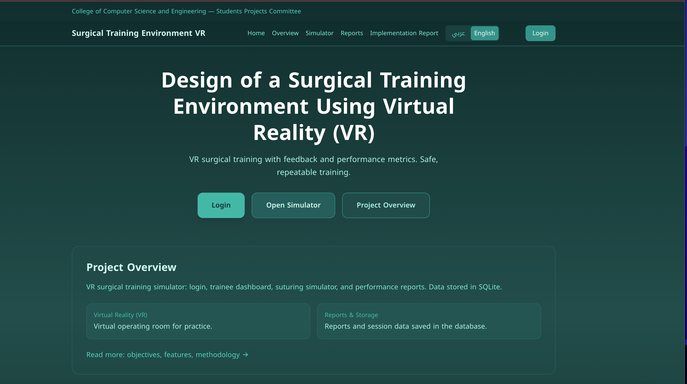

Design of a Surgical Training Environment Using Virtual Reality (VR)
Graduation Project — Presentation
University of Hail — College of Computer Science and Engineering
A browser-based surgical skills environment: Babylon.js 3D ward and procedures, linked to a React app (login, sessions, reports in MySQL). Desktop use is the default; when a headset is available, Start with VR uses the WebXR Device API (immersive-vr) through Babylon’s default XR experience—teleportation and pointer selection on room meshes.
Team Members
A team of six members from the College of Computer Science and Engineering. Each member contributed to different aspects: system architecture, core functionality, backend and database, and frontend implementation.
Outline
- 1System Architecture and Design Implementation
- 2Core Functionality Implementation
- 3Backend and Database Implementation
- 4Frontend / User Interface Implementation
- 5Testing Strategy and Methodology
- 6Testing Results and Bug Fixing
- 7System Integration Status
- 8Deployment Readiness
- 9Achieved Milestones and Current Progress
- 10Remaining Work and Plan to Completion
Same ten topics as before—now including WebXR: optional immersive VR from the simulator start screen, alongside the React ↔ Express ↔ MySQL integration.
1. System Architecture and Design Implementation
flowchart TB
subgraph Pres[Presentation Layer]
UI[React SPA — Vite]
Sim[Babylon.js — public/surgical-sim]
UI -->|Open /training → URL params| Sim
Sim -->|Optional WebXR immersive-vr| XR[Headset / controllers]
end
subgraph App[Application Layer]
API[Express REST API — Node.js]
end
subgraph Data[Data Layer]
DB[(MySQL)]
end
Pres -->|fetch /api — proxied in dev| App
App -->|mysql2| Data
| Tier | Technology | Responsibility |
|---|---|---|
| Presentation | React 18, Vite 5, Tailwind 4, Babylon.js (CDN) | Web app UI; 3D sim; WebXR via createDefaultXRExperienceAsync; sessionBridge → reports |
| Application | Express (Node.js) | REST API, auth, sessions, reports, stats, instructor admin |
| Data | MySQL | TRAINEES, COURSES, SESSIONS, REPORTS (3NF, indexed) |
Three-tier architecture: the React SPA opens /surgical-sim/index.html with query parameters. The Babylon scene supports desktop (UniversalCamera + pointer lock) and optional WebXR: navigator.xr.isSessionSupported('immersive-vr') enables Start with VR; sessionBridge.js persists scores to localStorage and links to /reports. Express + MySQL handle trainees, sessions, and reports.
2. Core Functionality Implementation
| Feature | Implementation |
|---|---|
| Login & Register | AuthContext; /api/auth/login, /api/auth/register, /api/auth/check-email |
| User Profile | Specialty, prior simulation / engine experience fields in TRAINEES |
| Trainee Dashboard | Stats, chart, quick actions — /api/stats/:traineeId |
| Instructor Dashboard | /api/admin/trainees, /api/admin/reports |
| Clinical Simulator | Babylon.js — ward, pre-op, suturing / layered closure / damage-control; difficulty from URL |
| VR mode (optional) | Start with VR — WebXR immersive-vr + local-floor; floor meshes from GLB; teleport + pointer selection (Babylon default XR UI disabled—custom entry) |
| App ↔ Simulator | URL params (sessionId, traineeId, traineeName, difficulty); sessionBridge.js; lastSessionResult → Reports |
| Reports | List, date filter, CSV, print; optional full evaluation text after simulator return |
| Bilingual | LangContext, i18n/strings.ts — Arabic / English, RTL where applicable |
Trainees open the simulator from Training with encoded context. Start begins desktop exploration; Start with VR is enabled only when WebXR reports support for immersive VR (secure context: localhost or HTTPS). Procedures produce reports synced to the app as before. The stack is integrated Babylon.js + React—no separate legacy Three.js simulator.
3. Backend and Database Implementation
Express API Endpoints
| Endpoint | Method | Purpose |
|---|---|---|
| /api/auth/register, /login | POST | Account creation, login |
| /api/auth/check-email | GET | Email availability |
| /api/sessions | POST | Create session (difficulty, course) |
| /api/sessions/:id/end | PATCH | End session timestamp |
| /api/reports | POST | Create report for session |
| /api/reports/:traineeId | GET | Trainee report list |
| /api/stats/:traineeId | GET | Dashboard aggregates |
| /api/admin/trainees, /api/admin/reports | GET | Instructor views |
| /api/health | GET | DbContext readiness check |
Schema in server/schema.sql; SESSIONS includes difficulty; REPORTS stores scores, steps, duration, comments (TEXT).
MySQL Schema — ER Diagram
erDiagram
TRAINEES {
int TraineeID PK
string Name
string Email
string Role
}
COURSES {
int CourseID PK
string CourseName
string Type
}
SESSIONS {
int SessionID PK
int TraineeID FK
int CourseID FK
string Difficulty
string Date
}
REPORTS {
int ReportID PK
int SessionID FK
float TotalScore
int StepsCompleted
}
TRAINEES ||--o{ SESSIONS : "has"
COURSES ||--o{ SESSIONS : "has"
SESSIONS ||--|| REPORTS : "generates"
4. Frontend / User Interface Implementation
| Technology | Purpose |
|---|---|
| React 18 | Components, hooks, state |
| Vite 5 | Build, dev server |
| Tailwind CSS 4 | Utility-first styling |
| TypeScript | Type safety |
Pages & Routes
Landing (/), Overview, Login, Dashboard, Training, Reports, Instructor Dashboard, Implementation Report. Simulator: public/surgical-sim/ → /surgical-sim/index.html. Start screen: Start (desktop) and Start with VR (WebXR when the browser exposes a VR session).
UI Principles: Responsive layout, bilingual (AR/EN), teal theme, API-offline resilience; VR button disabled until scene load + WebXR support.
Landing Page

Dashboard

5. Testing Strategy and Methodology
Unit Tests
validation.ts: validateEmail, validatePassword, validateRequired — empty/invalid/valid cases
Integration Tests
- Login / Register → dashboard or training as expected
- Training → simulator URL includes traineeName, difficulty; optional sessionId when API + DB available
- Procedure complete → localStorage payload → navigate to /reports → sync or display evaluation banner
- Reports: filter, CSV, print; API health via DbContext
UI, Simulator & Database
Manual checks: navigation, RTL, responsive, language toggle. Simulator: procedures, results, Start with VR with a WebXR-capable browser and headset (Chrome/Edge recommended). MySQL via API when the server runs.
Validation helpers support forms. E2E assumes npm run dev (API + Vite). Verify URL params, sessionBridge, Reports—and optionally immersive VR entry after the ward loads.
6. Testing Results and Bug Fixing
| Test Type | Description | Status |
|---|---|---|
| Unit | validation.ts — email, password, required fields | Pass |
| Integration | Login → Training → Babylon sim → Reports / evaluation sync | Pass |
| UI | Navigation, RTL, responsive layout | Pass |
| Simulator | Procedures complete; bridge to app when linked | Pass |
| WebXR | immersive-vr session from Start with VR; fallback: desktop only | Pass (when hardware/browser support) |
| Database | Sessions, reports, stats via API + MySQL | Pass |
| Dev stack | Concurrent API (3001) + Vite (5173), proxy /api | Pass |
Bug Fixing: Examples: API offline handling, session URL edge cases, evaluation persistence without sessionId, HMR/proxy configuration.
Manual and scripted checks align with the current stack. Issues addressed include connection refused when only the frontend ran, localStorage report contract, and keeping the presentation layer resilient if MySQL is temporarily unavailable.
7. System Integration Status
- Frontend ↔ Backend: Fetch to
/api/*; Vite dev server proxies to Express on port 3001. - Backend ↔ Database: mysql2 driver; sessions end with PATCH; reports keyed by session.
- Simulator ↔ App:
/surgical-sim/index.html?…passes traineeName, difficulty, and when available sessionId/traineeId.sessionBridge.jswriteslastSessionResult; Go to evaluation →/reports. Same flow after desktop or WebXR exploration—the XR session uses Babylon’s camera handoff from the loaded ward. - Auth: AuthContext +
localStorage; protected routes for trainee and instructor.
Status: End-to-end flow: Training → simulator → results → Reports (with API sync when a session exists).
The old standalone simulator.html + Three.js path was removed; the Babylon.js bundle is the single integrated simulator. Reports may show a highlighted evaluation block after return from the sim, in addition to tabular history.
8. Deployment Readiness
| Component | Command | Status |
|---|---|---|
| Frontend Build | npm run build | Vite outputs dist/ including public/surgical-sim |
| Dev (full stack) | npm run dev | Concurrently: API (3001) + Vite (5173) |
| Frontend only | npm run dev:web | Vite alone (API must run separately) |
| Backend | npm run server or cd server && npm start | Express on 3001 |
| Database | cd server && npm run init-db | MySQL schema / seed |
| Preview | npm run preview | Smoke-test production bundle |
Environment: server/.env for MySQL; optional VITE_API_URL for production API origin.
Readiness: Production build passes; static app + Node API + MySQL can be split across hosts (static CDN + VPS/Railway, etc.).
Use npm run dev for local development so the API is always available—avoiding ERR_CONNECTION_REFUSED on /api. For production, use HTTPS, secure cookies if adding sessions, and bcrypt for passwords.
9. Achieved Milestones and Current Progress
- ✅ Three-tier architecture (React + Express + MySQL)
- ✅ Login, Register, role-based trainee / instructor
- ✅ Trainee Dashboard — stats, chart, quick links
- ✅ Instructor Dashboard — trainees and cross-trainee reports
- ✅ Babylon.js clinical simulator — ward, procedures, scoring
- ✅ WebXR — Start with VR (immersive-vr) when supported; building meshes used for teleportation
- ✅ Deep link from Training + session bridge + Reports sync / evaluation view
- ✅ Reports: list, filter, CSV, print, latest evaluation highlight
- ✅ Bilingual UI (Arabic / English) with RTL support
- ✅ MySQL schema and Express API (sessions, reports, health)
- ✅ Dev workflow: single
npm run devfor API + frontend
Current Status: Core graduation scope delivered; simulator stack modernized and integrated with the web app.
The project is a unified Babylon.js + React system: multiple procedure types, optional headset immersion via WebXR on the start screen, and reporting tied to trainee sessions in MySQL.
10. Remaining Work and Plan to Completion
Remaining Work (Future Enhancements)
- Richer VR UX: custom controller models, snap turning, comfort vignette
- Optional
immersive-aror mixed-reality modes - More procedure modules and analytics dashboards
- Production security (bcrypt, JWT or server sessions, rate limits)
- Automated E2E tests (Playwright/Cypress) including WebXR smoke checks where feasible
Plan to Completion
Graduation deliverable: Complete. WebXR entry is implemented; further items are polish and research.
Next steps could include AR pass-through, AI-assisted feedback, and deployment hardening. The current build supports demo, written report, and committee Q&A—including VR on supported hardware.
References
- React — https://react.dev
- Babylon.js — https://doc.babylonjs.com (incl. WebXR Experience Helpers)
- Vite — https://vitejs.dev
- Tailwind CSS — https://tailwindcss.com
- Express — https://expressjs.com
- MySQL — https://dev.mysql.com/doc/
- WebXR Device API — https://www.w3.org/TR/webxr/
Stack: React, Vite, Tailwind, Babylon.js (including WebXR via createDefaultXRExperienceAsync); Express + mysql2 + MySQL. WebXR requires a secure context (HTTPS or localhost).
Questions?
Surgical Training Environment VR — University of Hail